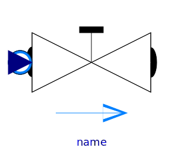

| Name |
Description |
 ValveIncompressible ValveIncompressible |
Valve for (almost) incompressible fluids |
| ValveVaporizing |
Valve for possibly vaporizing (almost) incompressible fluids,
accounts for choked flow conditions |
| ValveCompressible |
Valve for compressible fluids, accounts for choked flow
conditions |
|  ValveLinear |
Valve for water/steam flows with linear pressure drop |
 ValveDiscrete ValveDiscrete |
Valve for water/steam flows with linear pressure drop |
 BaseClasses BaseClasses |
Base classes used in the Valves package (only of interest to
build new component models) |